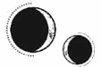

CAPÍTULO 54
Abrilis 1787
Cuando Helena se plantó sobre la presa y miró hacia el Reducto que se alzaba al otro lado del puente, dudó.
Había echado de menos a Kaine toda la semana. Sin embargo, ahora que había regresado, sentía miedo. A veces era muy impredecible. Cada momento de ternura que compartían solía ir seguido de todo lo contrario.
Tomó aire un par de veces para calmarse, apretó los dientes y se obligó a cruzar el puente. Un necrómata la esperaba en la puerta del piso. Se le cayó el alma a los pies y tragó saliva con dificultad, pero abrió la bolsa y sacó el sobre junto con los recambios para su botiquín.
Le ardía la cara, aunque hizo todo lo posible para contener su expresión y no mirar al necrómata a los ojos cuando se lo entregó todo.
—Toma. —Lo puso en sus manos y se dio la vuelta.
—Marino.
Estuvo a punto de desmayarse cuando oyó su nombre. Se giró de golpe, pero lo único que había allí era el necrómata.
—¿Puedes… hablar? —Nunca había escuchado hablar a un necrómata. Que usaran sus funciones motoras ya era inquietante, pero reactivar las partes del cerebro encargadas del lenguaje le pareció excesivo. Los necrómatas no hablaban. Nunca lo hacían.
—Entra —pronunció.
Lo siguió con cautela; solo se permitió relajarse cuando se dio cuenta de que se dirigían a la sala del pánico. ¿No podría haberle dicho la semana pasada que fuera allí?
Se sentía indignada cuando llegó, pero se le olvidó en cuanto puso un pie en la puerta, porque Kaine la sostuvo en sus brazos y la besó como si estuviera hambriento.
Helena aferró su capa con sus dedos y cerró los ojos cuando le devolvió el beso. El resto del mundo desapareció. Sintió los dientes de Kaine, voraces contra sus labios y su lengua.
Las manos de él encontraron sus caderas y la empujó hacia atrás. Cuando Helena jadeó, aprovechó para bajar con los labios por su cuello, hasta la hendidura de la garganta, entre sus pechos cubiertos, y él estaba de rodillas, empujándola hacia atrás en el sofá. Se colocó encima y Helena ni siquiera se había quitado todavía la bolsa.
Kaine deslizó las manos por debajo de su ropa; sus labios dejaron un reguero de deseo en cada centímetro de piel que encontró a su paso.
Helena jamás se había sentido tan extasiada.
La resonancia de Kaine vibraba bajo su piel y seguía el recorrido de sus nervios y sus venas, como si la estuviera cartografiando. No era de forma erótica. Se parecía más al pánico que sentía cuando, al atender a un herido, su propia resonancia intentaba localizar la herida. La recorrió entera y, acto seguido, desapareció, aunque sí que se percató de que la lengua de Kaine se deslizaba por la cara interior de su muslo, hasta que notó un placer que la consumió por completo.
Tenía la camisa desabrochada y la falda arrebujada alrededor de la cintura cuando Kaine se hundió entre sus piernas. Helena le rodeó el cuello con los brazos, lo atrajo hacia sí y enterró su rostro en su hombro. El mundo se redujo a una única cosa: Kaine, su respiración, su cuerpo y sus caricias.
Yacer entrelazados en aquel sofá estrecho, con los cuerpos enredados, fue como aquella horrible mañana de resaca, pero totalmente distinto. Esta vez lo estaban haciendo bien. Helena estaba con los ojos cerrados, acariciando su piel con los dedos, pero Kaine se incorporó al poco tiempo.
La miró de arriba abajo, como si la buscara con la mirada. Helena levantó la cabeza; aún le costaba recuperar el aliento.
—¿Qué sucede?
Le tocó la cicatriz de las costillas con el pulgar.
—Estaba preocupado por ti. He tenido mucho tiempo para preguntarme si lo hice todo como es debido cuando te curé.
Helena le tomó la mano.
—Lo hiciste todo perfectamente.
Aún parecía preocupado.
—¿Y no ha pasado nada desde entonces?
—No —respondió la chica—. No he salido del Cuartel General desde que volví. Y no… no volveré a hacerlo, salvo para venir a verte. No puedo… —Se interrumpió al sentir las palabras atascadas en la garganta—. No me lo permiten. Tengo órdenes estrictas al respecto, así que no tienes que seguir preocupándote.
Kaine soltó un suspiro de alivio y, tras besarle la frente, se dejó caer de nuevo a su lado. Helena cerró los ojos y le dejó saborear ese sentimiento, aunque notaba un nudo en el estómago y la mandíbula le temblaba por contener sus emociones.
—¿Qué pasa?
Helena levantó la vista y lo descubrió mirándola de nuevo.
—Me… me gusta recolectar. Solía hacerlo con mi padre en los meses de verano.
Hubo un silencio breve.
—No sabía que era importante para ti.
Helena se quedó callada durante unos instantes. Los recuerdos del humedal se desplegaron ante sus ojos: la naturaleza, las montañas y el brillante cielo azul, el único sitio donde podía respirar sin percibir el olor a sangre.
—Era lo más parecido a la libertad que me quedaba.
Notó que Kaine se ponía en tensión.
—Solo será hasta que termine la guerra —replicó en un tono a medio camino entre la súplica y la promesa. A Helena le sobrevino una carcajada al mirarlo.
—¿Solo hasta entonces? ¿Y cuándo llegará ese momento? ¿Y quién tiene que ganar para que alguno de los dos salgamos bien parados?
Kaine no fue capaz de mirarla a los ojos. Ella también apartó la mirada.
—La Llama Eterna jamás aprobará oficialmente algunas de las cosas que he hecho. No sé qué pasará cuando salga todo a la luz.
Se le formó un nudo en la garganta cuando pensó en todas las celdas subterráneas a las que Crowther la había llevado en tantas ocasiones. La sangre, las quemaduras, las extremidades cercenadas, los nervios destrozados, abiertos y retorcidos de formas horribles y terroríficas. El nombre de Helena figuraba junto a los registros de todos aquellos prisioneros. Era su letra la que describía en términos clínicos las heridas que sanaba, el estado de los prisioneros cuando fallecían o la ubicación exacta en la que se encontraban dentro de aquella terrible cárcel subterránea. Sabía que Crowther lo había hecho a propósito, que quería que apareciera entre el personal médico. Así podría usarlo en su contra.
En el pasado, tal vez se hubiera conformado con una amenaza latente, pero Helena ya no esperaba compasión de él.
Si ganaban la guerra, le quedaban pocos amigos, y ni siquiera Luc estaba ya de su parte.
Kaine le cogió la mano.
—Puedes huir. Dímelo y te sacaré de aquí.
Una parte cobarde y exhausta en su interior se estremeció al oír aquellas palabras. Huir. Libertad. Lejos de la guerra.
No se había dado cuenta de cuánto lo deseaba hasta que lo oyó de labios de alguien que lo decía de verdad. Cuando su padre le propuso volver a Etras, lo rechazó, pero ahora lo deseaba con todo su ser.
Sin embargo, dondequiera que fuese, la guerra continuaría, y Kaine participaría en ella. Él no podría huir. Si se marchaba, Crowther no lo mantendría con vida.
—No —negó mirándolo a los ojos.
—Mantengo la oferta. Te sacaré de aquí si me lo pides.
Helena estiró una mano y le apartó un mechón de pelo rubio de los ojos.
—¿Y tú qué? —preguntó. Kaine torció el gesto.
—Si pudiera huir, lo habría hecho cuando mi madre aún estaba viva.
—¿Te irías ahora si pudieras hacerlo?
Sus ojos se encendieron con pasión.
—Si es contigo, sí.
Helena se obligó a sonreír.
—Entonces nos iremos juntos. Cuando termine la guerra. —Le tomó la mano y se la llevó al pecho para que sintiera el latido de su corazón—. Cuando termine la guerra. Huiremos a un lugar donde nadie nos conozca. Desapareceremos para siempre.
Los ojos de Kaine se humedecieron, pero le devolvió la sonrisa.
—Por supuesto.
Estaba mintiendo.
Ambos mentían. No era más que un sueño.
Helena le apretó la mano hasta que la ilusión se deshizo. Luego tragó saliva; le daba miedo decir lo que venía después.
—La Llama Eterna ha obtenido más información sobre el proceso al que se someten los inmarcesibles para obtener la inmortalidad. Me han pedido que te pregunte por los detalles, para verificar la información.
Kaine le sostuvo la mirada unos instantes. Después, se quedó mirando a la nada.
—Kaine. —Helena lo tocó, y él se sobresaltó.
—Solo veo un borrón —dijo rápidamente—. No lo recuerdo.
—Cualquier cosa servirá. De verdad.
Guardó silencio y respiró profundamente un par de veces antes de volver a hablar:
—¿Qué quieres saber?
—¿Había algún sello en el suelo?
Kaine asintió levemente.
—¿Podrías describírmelo? ¿O dibujarlo?
Negó con la cabeza.
—No llegué a verlo bien. Recuerdo que había nueve puntas y que yo estaba en el centro. Cooperé, pero aun así me drogaron y me ataron para que no pudiera moverme.
Mientras hablaba, miraba la pared del fondo.
—Hicieron pasar al personal de la mansión, a los que todavía no habían asesinado. Yo no sabía cómo funcionaba el proceso, qué iban a… Cuando pregunté qué iban a hacer, me dijeron que tenía suerte de tener tantos sirvientes, porque así no tendrían que usar a mi madre.
—¿Mataron a tus sirvientes?
Kaine asintió distraído.
—En el campo no solíamos tener mucha compañía. Mi madre caía enferma a menudo y, con tantos rumores, mi padre no confiaba en nadie. Él siempre estaba ocupado con el gremio, así que nos encontrábamos allí los dos solos, junto con los sirvientes. Algunos de ellos eran prácticamente de la familia. La doncella de mi madre, Davies, la había acompañado desde que era niña, y vino a Puntaférreo con ella cuando se casó. Cuando nací, cuando mi madre empezó a… Davies fue la que me crio los primeros años.
—Lo siento mucho, Kaine.
Se quedó callado un buen rato, sin atreverse a mirarla.
—Había una plataforma por encima de mí, desde donde se inclinaba Morrough. Tenía algo en la mano. Supongo que sería la esquirla de hueso. Recuerdo que grité. Cuando recobré la consciencia, todavía se escuchaban gritos, pero no era yo quien los profería. No los escuchaba, simplemente los sentía, como si estuvieran atrapados en mi interior. Todos enredados, pero aún con vida.
Helena lo observó horrorizada.
—¿Sigues… oyéndolos?
Kaine cerró y abrió los ojos lentamente.
—Ahora están más callados.
Helena tragó saliva.
—Según la información que tenemos, los inmarcesibles son el resultado de los intentos de Morrough por hacerse con el poder sin sufrir las consecuencias adversas.
Kaine guardó silencio unos instantes.
—Entonces, si matamos a los inmarcesibles, lo debilitaremos.
—En teoría, sí. Si destruimos los talismanes, ¿afectará a las filacterias? ¿Así es como mueren los inmarcesibles?
Kaine negó con la cabeza.
—No, puede generar otra filacteria, pero el resultado… Son poco más inteligentes que un necrómata.
—Pero tiene que haber una forma. La encontraremos.
El chico la miró; sus ojos volvieron a despejarse y a enfocar de nuevo.
—Si los inmarcesibles son la fuente de poder de Morrough, eso significa que la guerra no acabará hasta que estén todos muertos.
Helena supo de inmediato que quería prepararla para lo peor.
—No. Hallaré la forma de revertirlo. Si es posible unir almas, seguro que también se pueden desunir.
—Helena…
Esta negó con la cabeza.
—Ya creí una vez que no podría salvarte. Deberías confiar un poco más en mí —carraspeó. No deseaba tener esta conversación, así que se puso en pie y se vistió con rapidez.
En realidad, le daba igual informar a Crowther. Lo que quería era revisar el sello que había dibujado Wagner para poder investigarlo.
—Espera. Tengo algo para ti que ojalá no vuelvas a necesitar.
En un paño impermeable se encontraban sus dagas. Helena había creído que la corriente se las había llevado.
—¿Cómo las has encontrado?
—Hice unas de repuesto. Tardé mucho tiempo en encontrar un metalúrgico que tuviera la resonancia de tu aleación, así que pensé que lo más sensato era encargar dagas de sobra.
—Gracias —respondió, acariciándolas con cariño y metiéndolas con cuidado en la bolsa. Luego comenzó a trenzarse el cabello.
—Odio que lo lleves así —le espetó Kaine, y aquello la sobresaltó.
Alzó la mirada.
—También podría cortármelo. —Él pareció ofenderse de tal manera que tuvo que reírse—. No puedo tenerlo suelto cuando estoy trabajando, y siempre tengo que estar disponible por si hay alguna emergencia. Es práctico.
Kaine no parecía muy convencido.
—Quiero verte más a menudo.
Helena dejó de mover los dedos. Percibió la voracidad de sus ojos, la posesión, el hambre. Si se lo permitía, la alejaría de la guerra y la escondería. Y ese conflicto se hacía evidente en sus ojos.
Deseo. Deseo. Deseo. Lo sentía igual que el latido de su corazón.
Si no podía esconderla, la acapararía para sí tanto como pudiera. Se había enamorado de un dragón.
—Siempre estaré disponible para ti —replicó—. Si me llamas, vendré en cuanto pueda.
Kaine sacudió la cabeza al oír eso.
—No, no podremos seguir usando el Reducto como punto de encuentro. Hay planes de reconstrucción.
A Helena se le encogió el corazón.
—Ah. ¿Entonces cómo vamos a…?
—La Resistencia no vigila los cielos —afirmó—. Ahora que Amaris ha crecido, podrá volar de noche a la isla Este. Estoy seguro de que hay alguna azotea por allí. Buscaré un sitio para la semana que viene. Si el anillo se activa una sola vez, eso querrá decir que no está relacionado con la Resistencia. Avísame tú cuando llegues e iré a por ti.
Helena levantó la mano izquierda. Había temido que la refracción se desgastara con el paso del tiempo, pero seguía aguantando. Ya no veía el anillo a menos que se esforzara, y era tan ligero que a veces se olvidaba de que lo llevaba puesto.
—Dijiste que si alguna vez te avisaba yo…
Kaine la tomó de la mano y la atrajo hacia sí. La mano que le quedaba libre se deslizó por su garganta hasta que sus dedos echaron la cabeza de Helena hacia atrás. La besó con pasión y, después, la miró fijamente a los ojos.
—Llámame y acudiré.